Turath means heritage. Guests arrive through repeated arches into a lobby of light, water and carved stucco: a marble front desk framed by a carved arch wall and a lounge under a muqarnas dome, with cedar ceilings and brass lanterns.
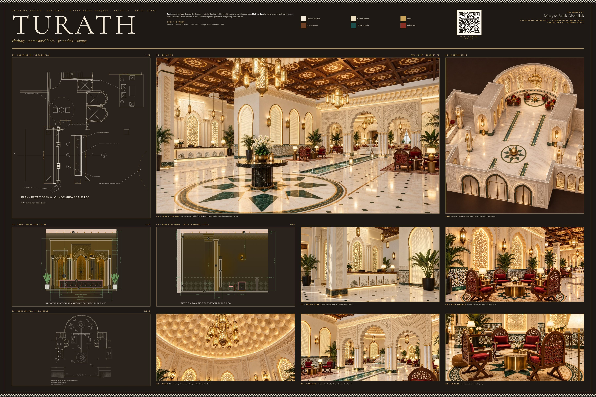
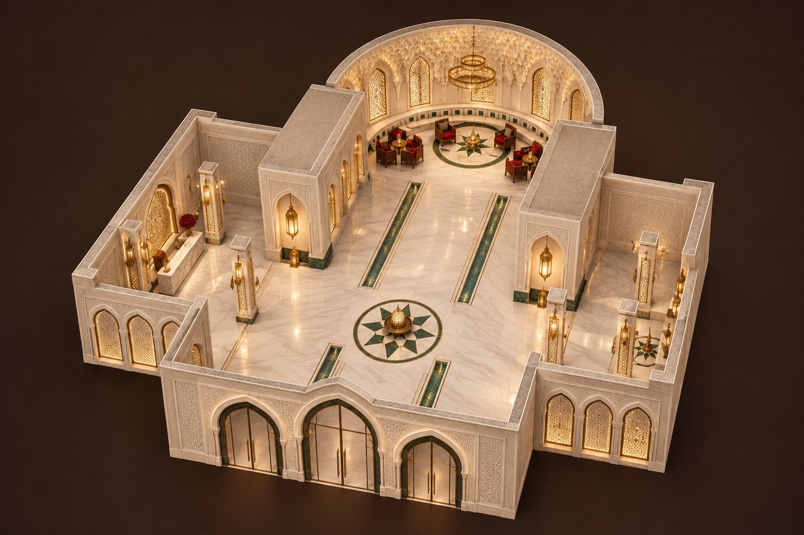
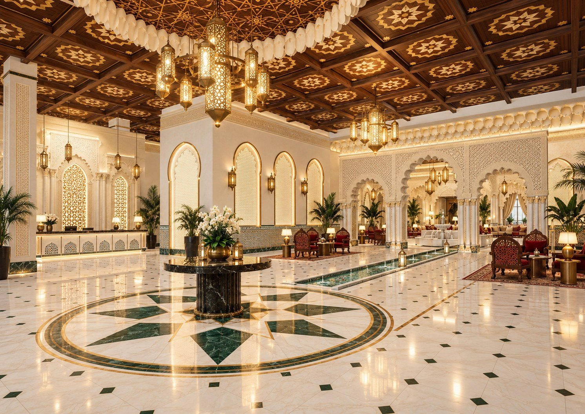
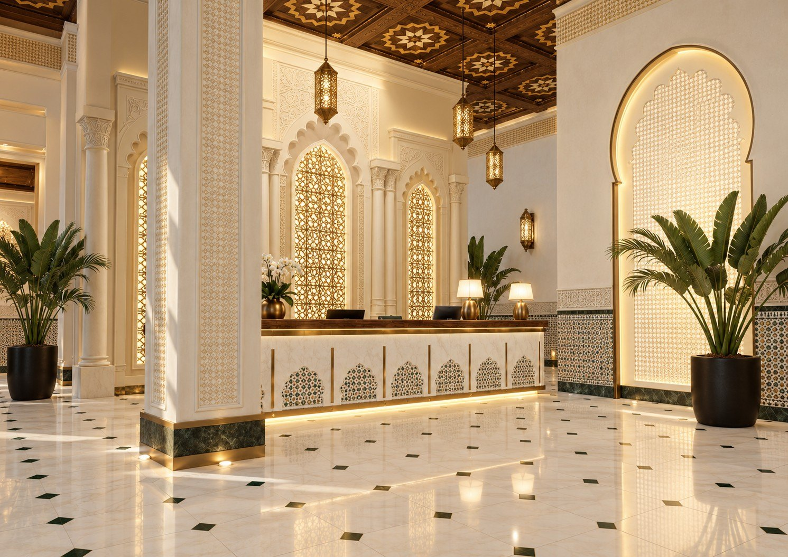
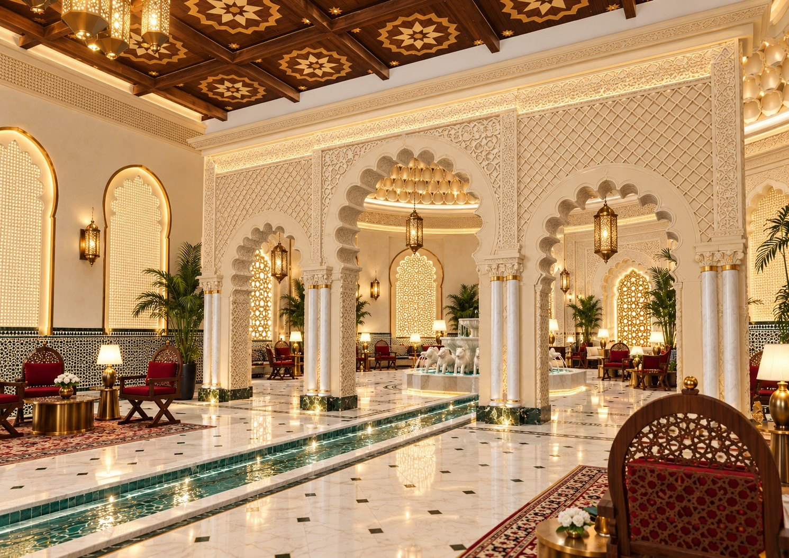
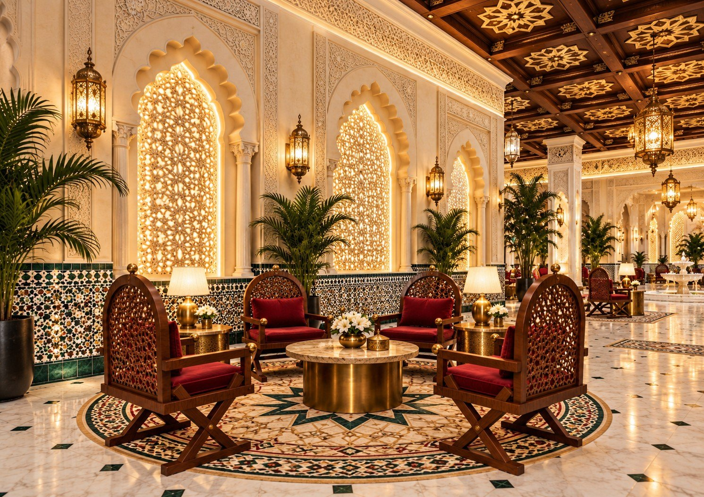
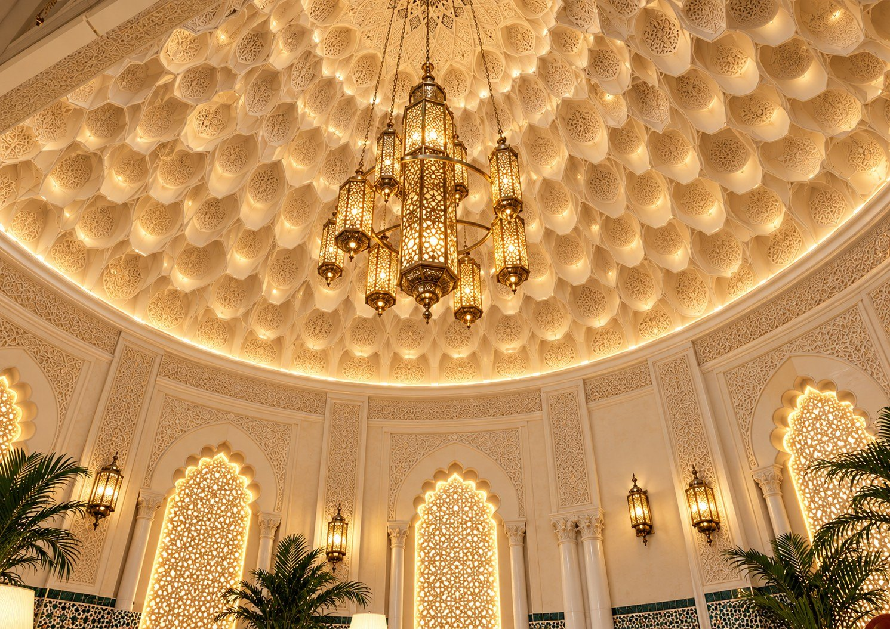
A boutique that celebrates Kurdish culture through the jamadani. One multifoil arch repeats on every wall, framing the jamadanis in warm walnut niches; a central walnut-and-marble table with gold jaali, a red-and-ivory mosaic cashier and a Persian-carpet mirror for trying the jamadani on.
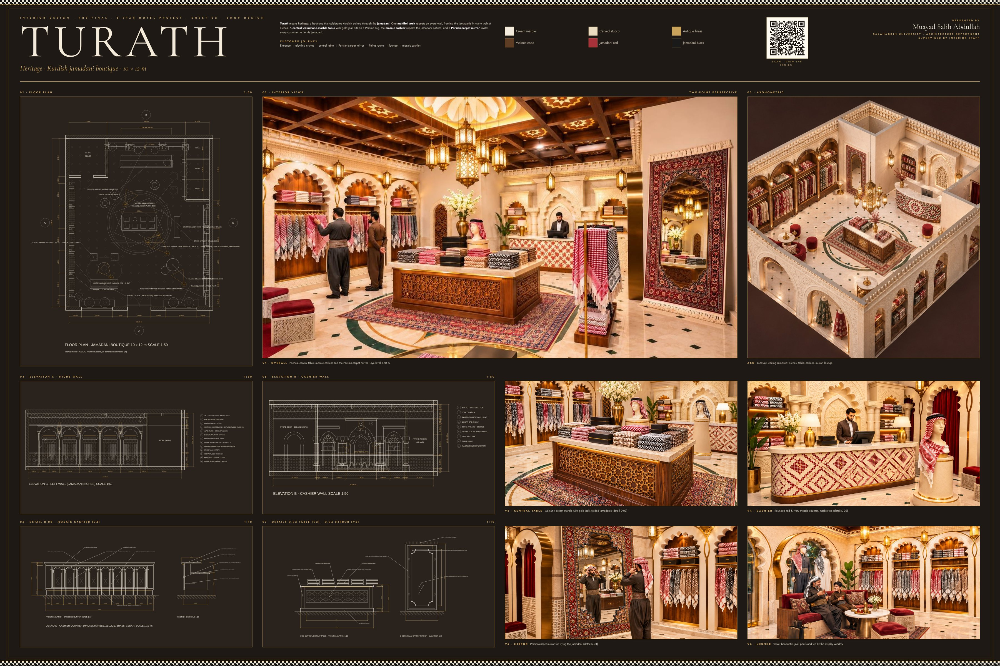
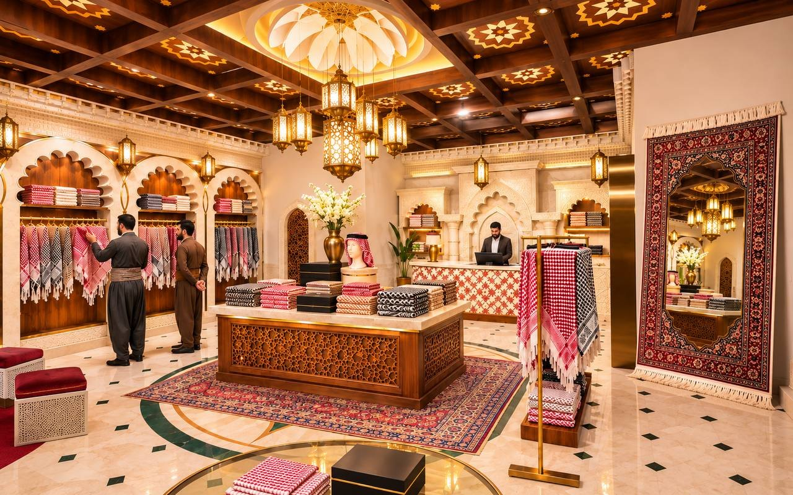
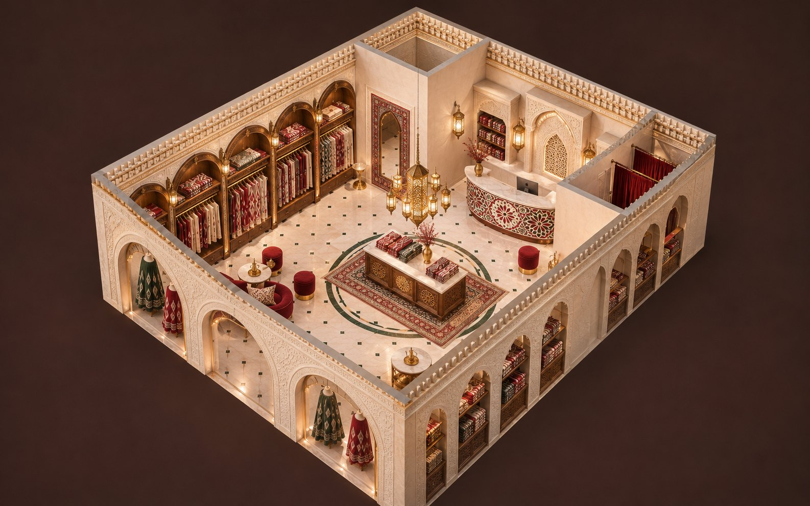
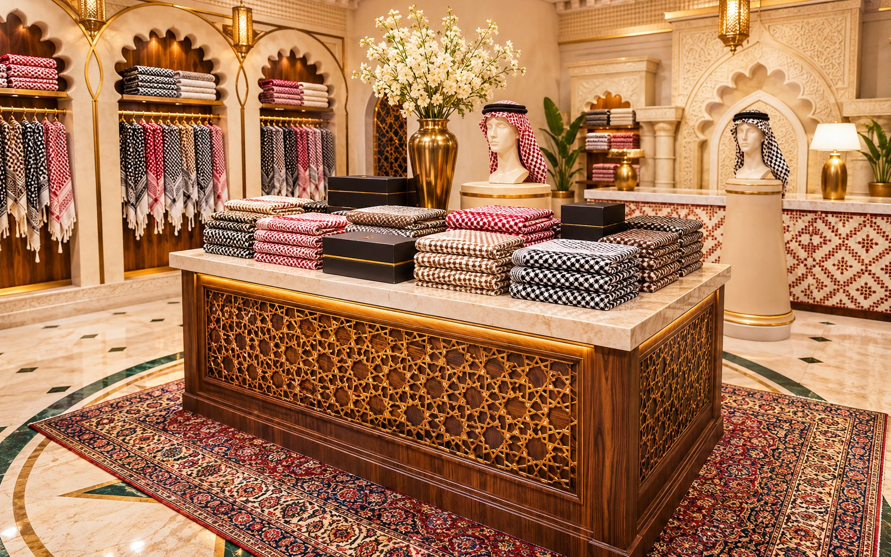
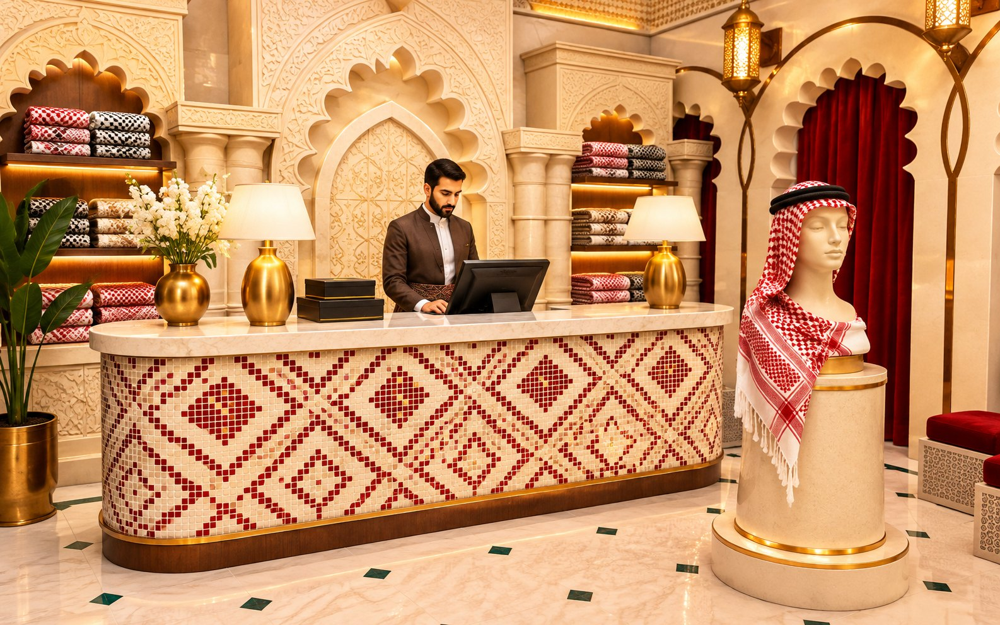
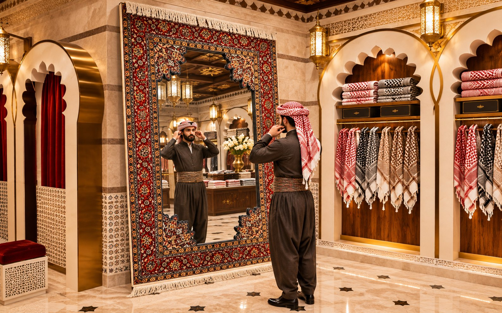
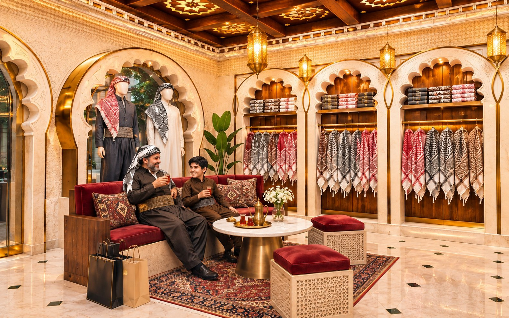
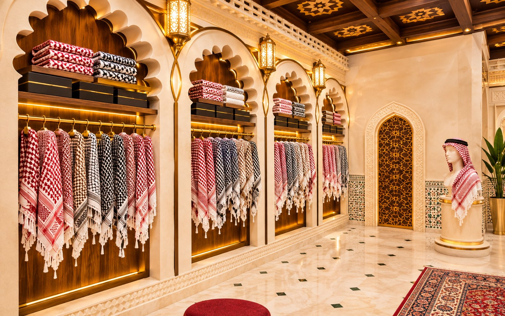